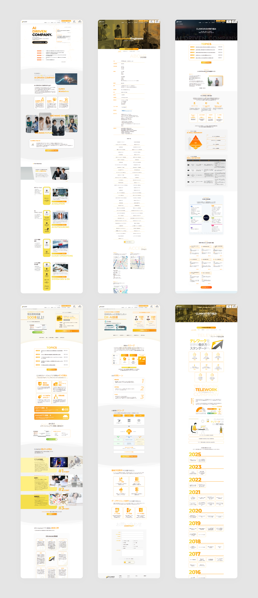

WEB
DIRECTION
IN-HOUSE
コーポレートサイト

プロジェクトの概要
入社時から現在に至るまで、自社コーポレートサイトの更新・改修を担当。2024年には、AI事業の推進に伴い、ブランドイメージの再構築を目的として、外部業者と連携しサイト全体の刷新を実施しました。プロジェクトリーダーとして全体の進行管理やディレクション、デザイン監修を担当。ブランドカラーであるオレンジを基調に、AI企業としての印象を明確に伝えるデザインへと再設計しています。また、リニューアル後はSEOおよびAIOを意識したコンテンツ設計・改善にも継続的に取り組んでいます。
課題と解決策
既存サイトは情報構造が複雑化しており、ユーザーが目的の情報へ辿り着きにくい状態でした。そのため、情報設計を見直し、ページ構成や導線の整理を実施。あわせて、自然検索からの流入を強化するため、コーポレートサイト内にオウンドメディアを設置し、コンテンツを起点とした流入導線を構築しました。リニューアル前後も各ページの改修や新規コンテンツの追加を行い、継続的な改善を行っています。
成果
リニューアル後、2024年度はセッション数が前年から約1.2倍に向上。2025年度にはコーポレートサイトのKPIである15万セッションを達成し、問い合わせ数の増加にも貢献しました。
